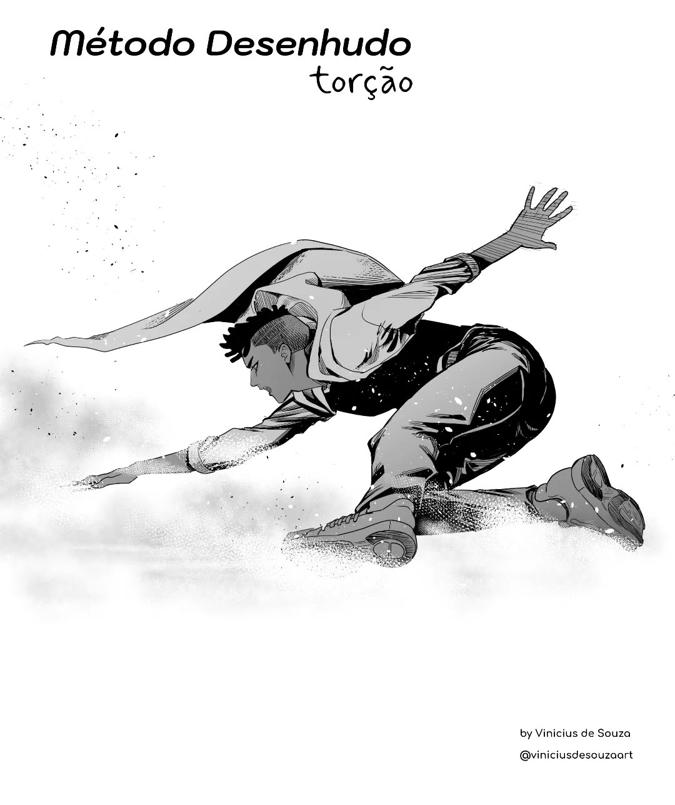

Dibujo
El dibujo ha sido mi pasatiempo principal en este último tiempo. Suelo enfocarme en anime y cómics.


Me encanta lo fantástico y la ciencia ficción por la libertad creativa que ofrecen.
Cada dibujo es una mejora nueva.

Durante la pandemia retomé el dibujo seriamente, creando personajes propios y una historia.
Actualmente intento pasar al arte digital, aunque sigo dibujando en papel.
 Dibujo de mi creación original.
Dibujo de mi creación original.
Ejercicio
Me propuse cambiar mis hábitos desde que entré a la universidad. Ahora hago ejercicio 6 días a la semana.
No tengo acceso a gimnasio, pero hago rutinas en casa con mancuernas ligeras y repeticiones.
Entreno por las mañanas con sesiones cortas para asistir a clases.

He descubierto la calistenia, que usa solo el peso corporal y es muy efectiva.
Aún no alcanzo mi meta, pero sigo esforzándome cada día.
Series & Películas
Me encantan las películas de acción, ciencia ficción, aventuras y comedia. Con las series, disfruto especialmente caricaturas.
Sigo de cerca el anime y las historias de superhéroes. Son mis géneros favoritos.